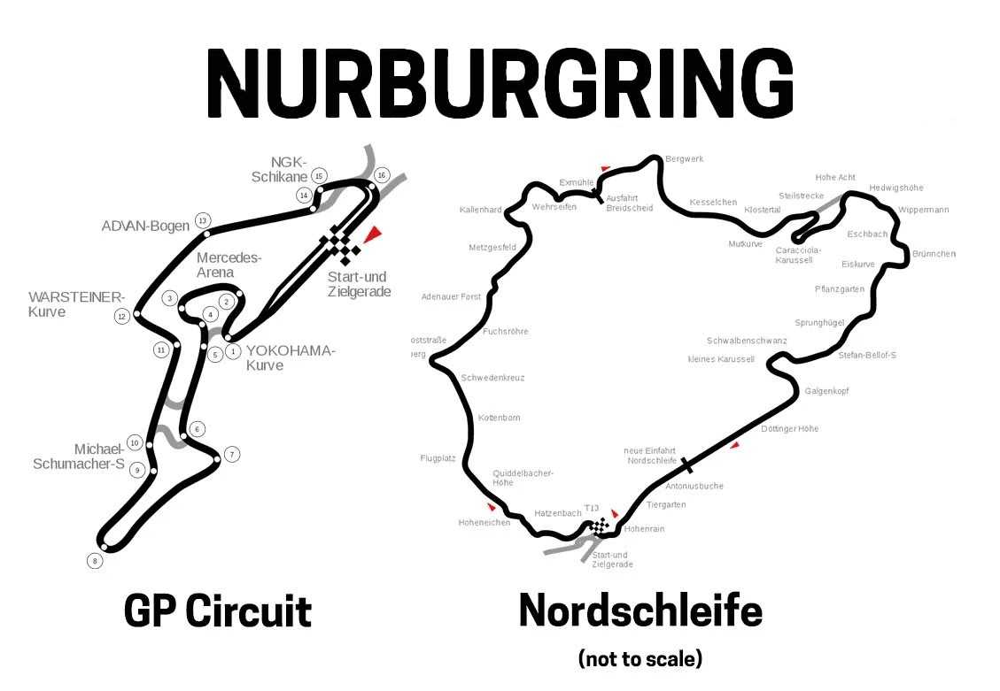
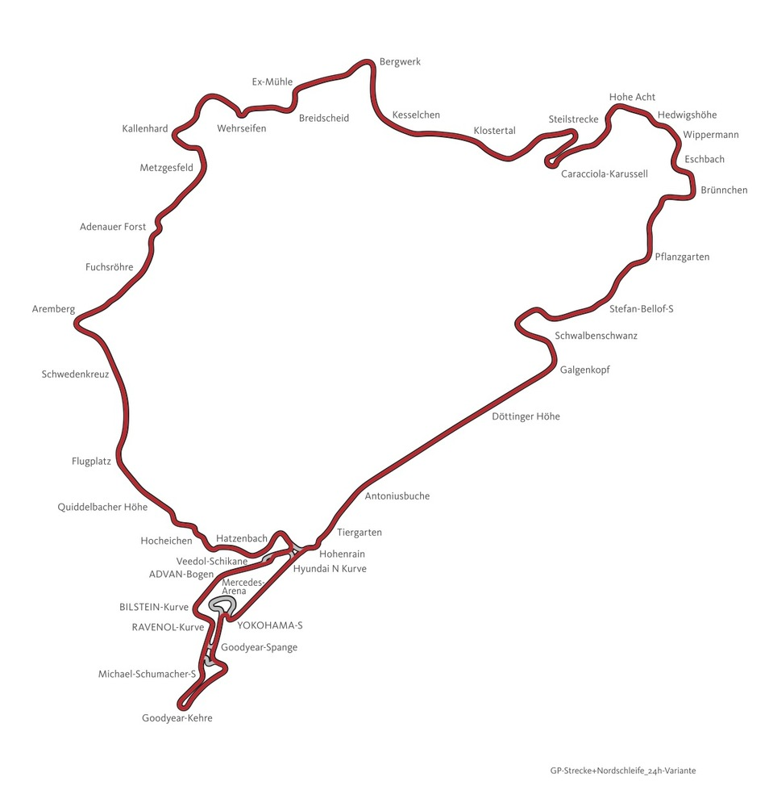
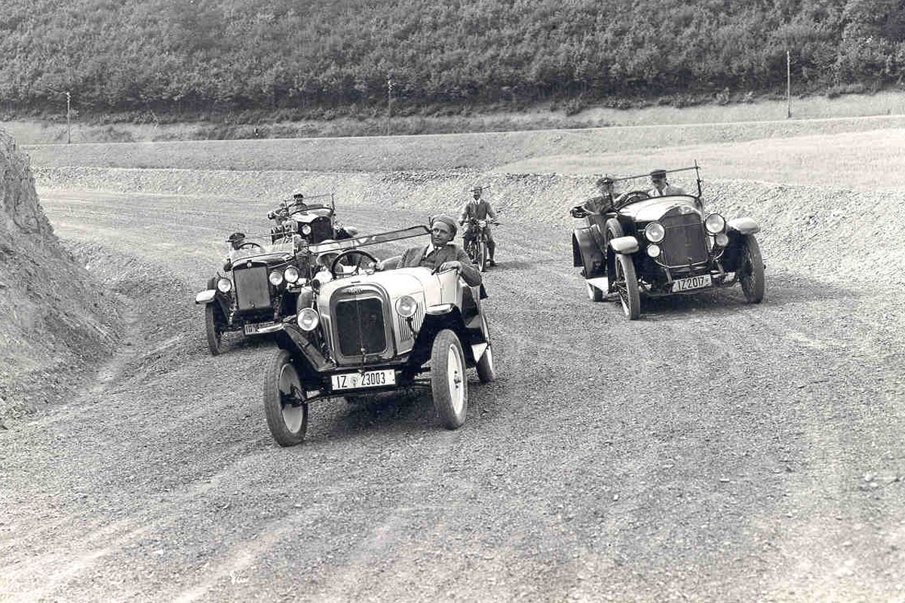
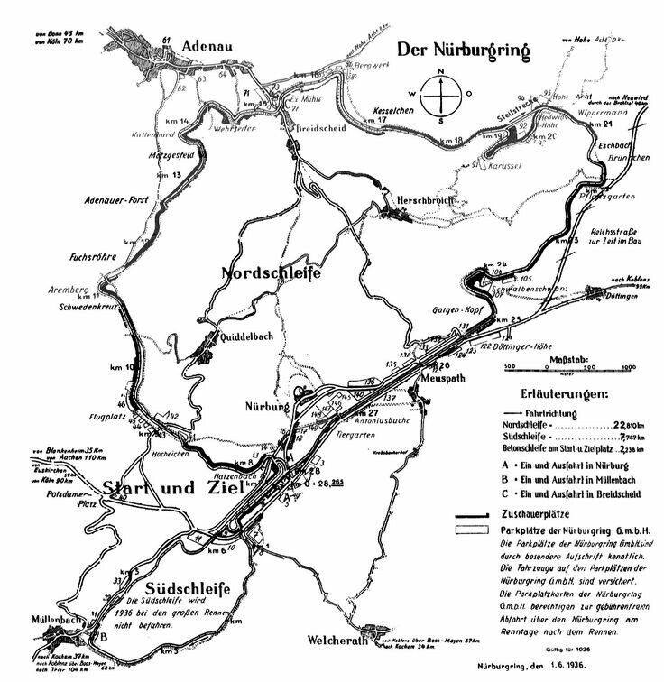
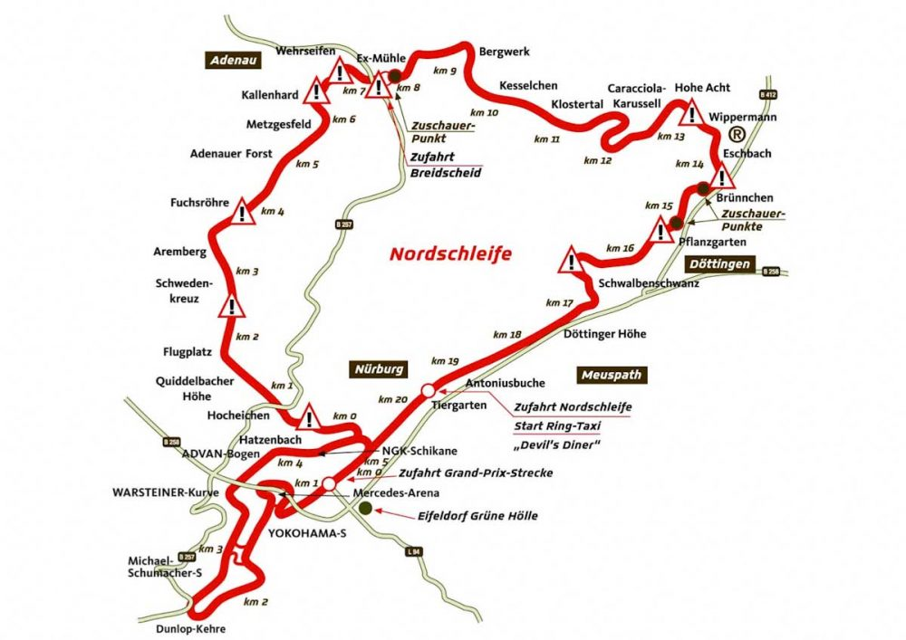
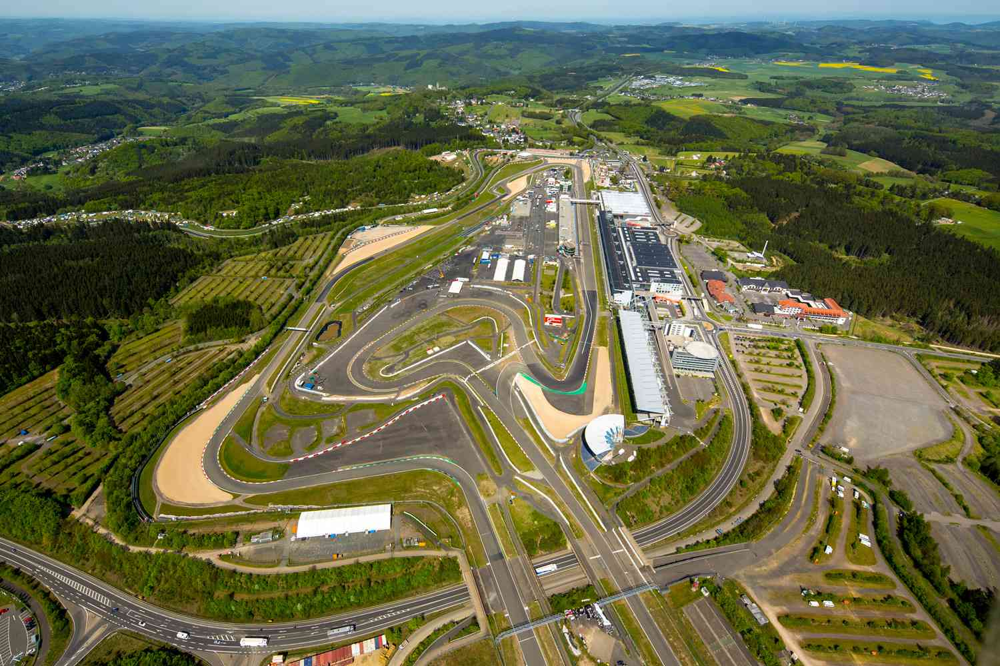
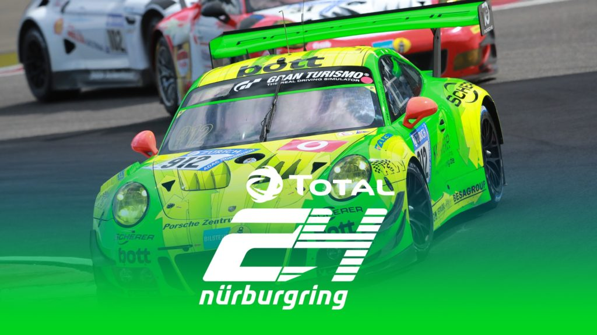
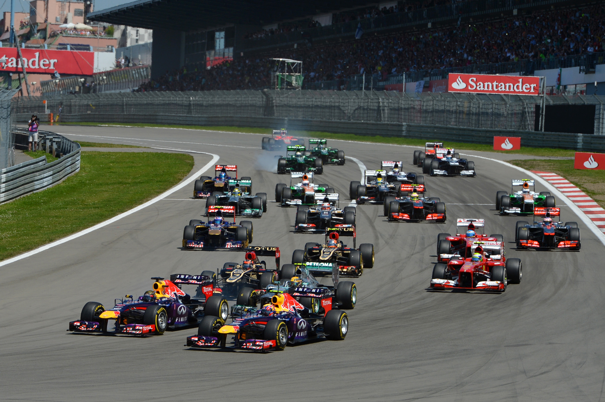

Introductie:
De Nürburgring, vaak liefkozend "De Groene Hel" genoemd, is een van 's werelds meest iconische racecircuits. Dit circuit is gelegen in de pittoreske Eifel-regio in Duitsland, ongeveer 70 kilometer ten zuidwesten van Keulen. Het circuit bestaat uit twee circuits; De Grand-Prix baan en de Nordschleife.
Grand Prix-baan: De Grand Prix-baan, ook wel bekend als de "GP-circuit," is een moderner en meer gestandaardiseerd circuit dat de Nürburgring in staat stelt om Formule 1- en andere internationale race-evenementen te hosten. Dit circuit is korter en minder uitdagend dan de Nordschleife, met een lengte van ongeveer 5,1 kilometer.
Nordschleife: De Nordschleife, ook wel bekend als de "Noordlus," is het oudste en meest iconische deel van de Nürburgring. Dit is een lang en uitdagend circuit met meer dan 20 kilometer aan bochtige wegen die door de Eifel-bergen lopen. De Nordschleife wordt vaak beschouwd als een van de meest uitdagende en gevaarlijke circuits ter wereld en wordt vaak gebruikt voor testdoeleinden door automakers vanwege zijn technische aard en variatie in bochten.
Wat de Nürburgring zo fascinerend maakt, is niet alleen de uitdagende racebaan zelf, maar ook de rijke geschiedenis en de legendarische status die het heeft verworven onder zowel motorsportfanaten als coureurs. Hieronder zie je links de circuits apart en rechts de circuits samengevoegd.
klik hier om naar het circuit 'Nürburgring te gaan:
 Geschiedenis:
Het verhaal van de Nürburgring begon in de jaren 1920, toen de behoefte aan een veeleisend en spectaculair circuit voor races in Duitsland duidelijk werd. De Nürburgring werd gebouwd tussen 1925 en 1927 als een ambitieus project. Het oorspronkelijke Nordschleife-circuit, dat deel uitmaakt van het complex, is een 20,8 kilometer lang labyrint van smalle bochten, hoogteverschillen en uitdagende secties die door het heuvelachtige terrein slingeren. Het was oorspronkelijk bedoeld als een testcircuit voor autofabrikanten en is al snel uitgegroeid tot een racecircuit dat zijn gelijke niet kent.
 
Technische Details:
De Nürburgring Nordschleife is berucht om zijn technische complexiteit. Met meer dan 150 bochten, variërend van snelle rechte stukken tot scherpe haarspeldbochten, biedt het een ongeëvenaarde uitdaging voor coureurs van over de hele wereld. Het circuit heeft ook aanzienlijke hoogteverschillen, wat betekent dat coureurs te maken krijgen met steile beklimmingen en afdalingen die hun rijvaardigheid tot het uiterste testen. Met een lengte van 20,8 kilometer is het een van de langste en meest veeleisende circuits ter wereld.
 
Beroemde Evenementen:
De Nürburgring heeft een rijke geschiedenis van motorsportevenementen en heeft enkele van 's werelds meest prestigieuze races gehost. Een van de bekendste evenementen is de 24-uursrace van de Nürburgring, een uithoudingswedstrijd die coureurs en auto's tot het uiterste drijft. Deze race trekt internationale teams aan en wordt beschouwd als een van de zwaarste races ter wereld.

Een andere opmerkelijke race die hier heeft plaatsgevonden, is de Duitse Grand Prix in de Formule 1, hoewel deze later verhuisde naar een moderner gedeelte van het complex. De Nürburgring blijft echter een integraal onderdeel van de motorsportgeschiedenis en blijft een bedevaartsoord voor racefans van over de hele wereld.

De Nürburgring is niet alleen een legendarisch motorsportcircuit, maar ook een onmisbaar cultureel icoon in de wereld van de autosport, waar zowel coureurs als fans samenkomen om de uitdagingen en opwinding van deze adembenemende baan te ervaren.
Bezoekersinformatie:
Openingstijden: De openingstijden van de Nürburgring kunnen variëren afhankelijk van het seizoen en of er evenementen plaatsvinden. Over het algemeen is de Nordschleife (het oude circuit) open voor het publiek tijdens de lente, zomer en herfstmaanden, meestal van maart/april tot oktober/november. De Grand Prix-strecke (het moderne circuit) kan op andere data open zijn, vaak in overeenstemming met de internationale racekalender.
Toegangsprijzen: De toegangsprijzen kunnen ook variëren afhankelijk van het type toegang en of je met je eigen voertuig wilt rijden of deelnemen aan evenementen zoals toeristenritten of trackdays. Er zijn vaak verschillende prijsopties beschikbaar, zoals dagpassen, seizoenspassen, enzovoort. De prijzen kunnen ook verschillen voor motorfietsen en auto's. de meest actuele prijsinformatie.
Evenementen: De Nürburgring organiseert regelmatig verschillende evenementen, variërend van races tot publiekstoegankelijke trackdays en toeristenritten. Sommige van deze evenementen kunnen gratis toegankelijk zijn voor toeschouwers, terwijl andere mogelijk een aparte toegangsprijs hebben. Het is raadzaam om de evenementenkalender op de officiële website te raadplegen om te zien welke evenementen plaatsvinden tijdens je bezoek.
klik hier om de events te zien op de Nürburgring:
Rijd een ronde mee over de Nordschleife: